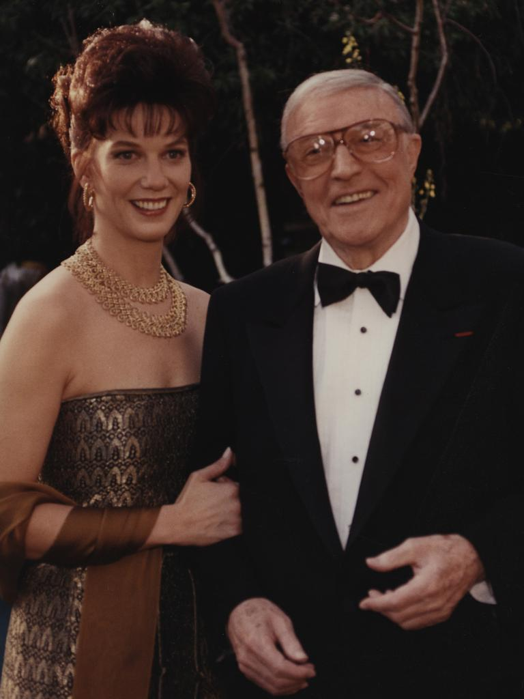
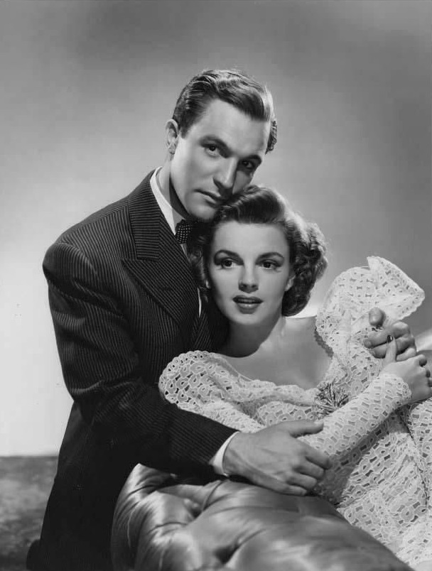

Life
Learn about Gene Kelly’s Life!

Gene Kelly was an American Dancer, Actor, Choreographer, and Motion-Picture Director. Kelly was born on August 23rd 1912 in Pennsylvania. He had 4 siblings, his father was a record company sales executive and his mother was a former actress. When Kelly was younger he actually dreamed of becoming a professional athlete but his mother redirected him into dancing. Gene Kelly studied dance forms such as ballet and etc. He went to Pennsylvania State College and the University of Pittsburgh majoring in journalism and economics respectively. Gene toured in Vaudeville with his brother Fred. Kelly moved to New York City in 1938, he was a chorus member in Cole Porter’s "Leave It to Me", in 1939 he was cast in the role Harry the Hoofer in the play "The Time of Your Life". In 1940, he got his stardom when he starred as Joey in the musical / drama "Pal Joey", his performance in "Pal Joey" got Kelly an offer for a Hollywood contract and he left New York in 1941. Gene Kelly’s film debut was in a movie with Judy Garland called "For Me and My Gal" (1942). Gene Kelly married his first wife Betsy Blair in 1941 and divorced in 1957. Gene Kelly married his second wife Jeanne Coyne in 1960 and Coyne died in 1973. Gene Kelly married his third wife Patricia Ward in 1990 and staying married until his death in 1996. Gene Kelly has three children, Kerry Kelly, Timothy Kelly, and Bridget Kelly. Gene Kelly died on February 2nd 1996, in Beverly Hills California, at the age of 83. Kelly's athletic style of dancing, combined with classical ballet technique, transformed the movie musical and did much to change the American public’s conception of male dancers.

Gene Kelly with his third wife Patricia Ward.

Judy Garland and Gene Kelly with For Me and My Gal (1942).